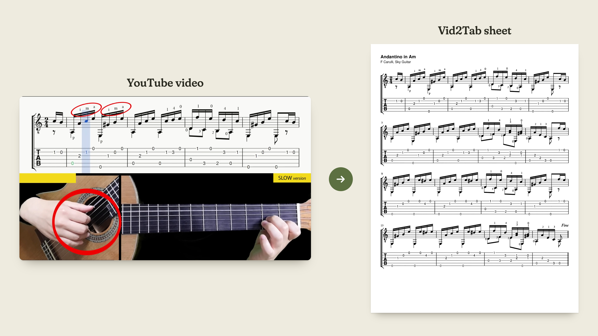

Vid2Tab
Completed November 2026 · Local Mac appI built Vid2Tab to turn YouTube guitar tab videos into clean, printable sheet music PDFs.

Watch the local app turn a guitar tutorial into a printable sheet, then play along with the video.
Vid2Tab project notes
Vid2Tab — From YouTube Tutorials to Printable Guitar Tabs
Why I built it
I learn fingerstyle guitar primarily through YouTube, but practicing from video tutorials was always frustrating. Most tutorials display only a few measures at a time, forcing me to constantly pause, rewind, and manually piece together screenshots.
I wanted a better way to practice: paste a YouTube link, extract the tablature shown in the video, and turn it into a clean, printable sheet.
So I built Vid2Tab, a local Mac application that transforms on-screen guitar tablature into organized PDFs, with an integrated library and interactive practice tools.
Turning the idea into a working product
What started as a simple extraction tool became a much more interesting engineering challenge.
Guitar tutorials rarely follow a consistent format. Some scroll continuously, others switch between pages, and many combine standard notation with tablature. Videos can contain watermarks, dark backgrounds, duplicate measures, and inconsistent spacing.
Rather than aiming for perfect automation, I focused on building a reliable workflow with lightweight user intervention where necessary.
Vid2Tab uses a processing pipeline built around Python, yt-dlp, ffmpeg, and image-processing tools to identify, extract, and organize the tablature displayed in videos.
I also explored how the application should handle repeated passages, distinguishing between the music as performed in the video and the music as originally written.
Beyond PDF extraction
As I developed the tool, I realized that generating a PDF solved only part of the problem.
Vid2Tab evolved into a practice environment with a searchable sheet library, full-screen reading, keyboard and pedal page turns, and synchronized video playback.
Users can follow along with a tutorial, jump to specific passages, and loop difficult sections without constantly switching between applications.
Building with AI agents
Vid2Tab was also an experiment in AI-assisted software development.
I used Claude Code as my primary implementation tool, focusing my own effort on defining the product, directing development, evaluating results, and refining the experience through iteration.
The project gave me hands-on experience working with coding agents to turn an idea into a functional application, while navigating the tradeoffs between automation, reliability, and usability.
What's next
I'm continuing to explore more precise playback synchronization and a native Mac application experience.